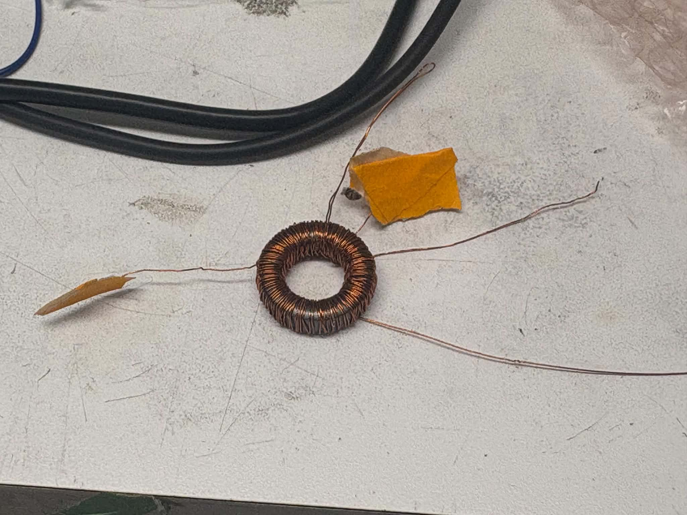

Our team at the Williams Group is designing and constructing custom RF generators capable of producing 1 to 1.5 kV amplitude waveforms from DC to 10 MHz, able to drive capacitive loads up to 1 nF. The system has three components: a computer interface that synthesizes arbitrary waveforms and communicates with the host machine over SPI (requiring custom software drivers), a power amplifier built and tested from an existing design and modified for our application, and a center-tapped step-up transformer to produce two waveforms 180 degrees out of phase.
My work on this project was the transformer. I started by researching commercial transformers against our target specs (1:8 to 1:10 step-up ratio, 1.0 to 1.5 kV output, 100 Hz to 10 MHz frequency range, center-tapped for 180 degree outputs, capacitive load), and found that no existing part could satisfy all three of turns ratio, voltage, and frequency range simultaneously, so I moved to a custom-wound design. I selected toroidal cores over U-core geometries for lower leakage inductance, and chose Material 43 NiZn ferrite over MnZn for its insulating properties and suitability at RF frequencies. I calculated the minimum primary turn count needed to avoid core saturation at our lowest operating frequency, then wound and tested prototype transformers at a smaller turns ratio to validate the approach with a function generator swept across a wide frequency range.